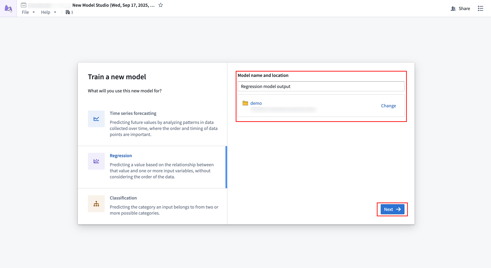
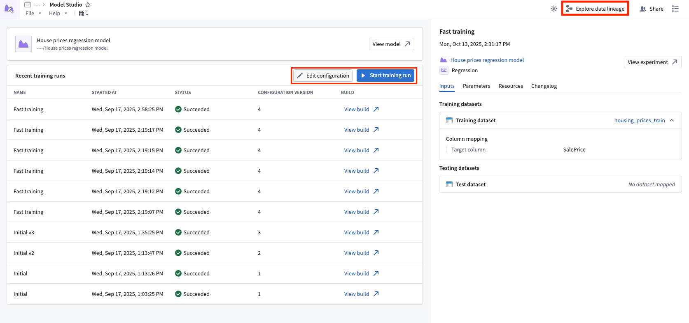
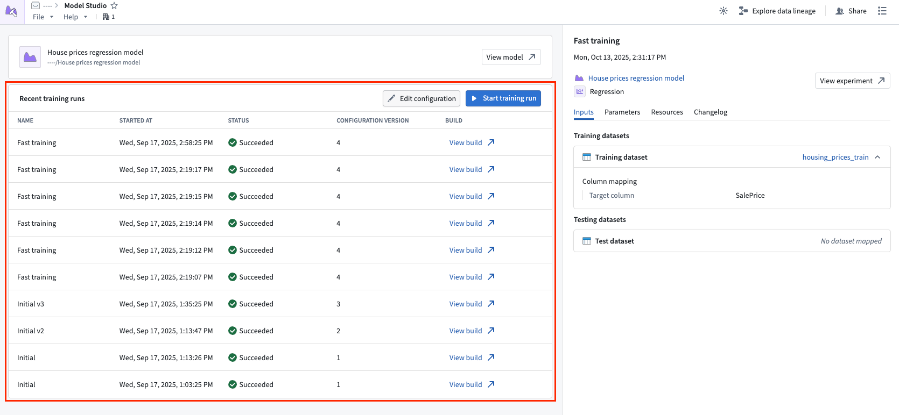
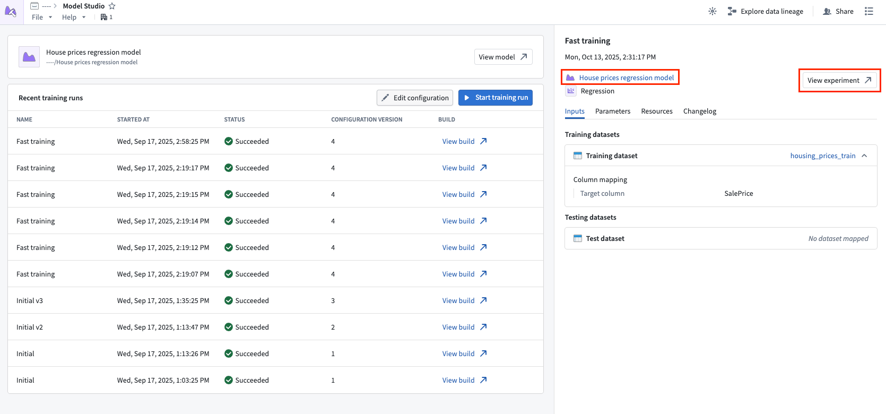
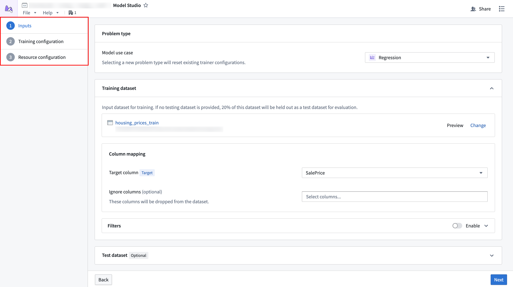
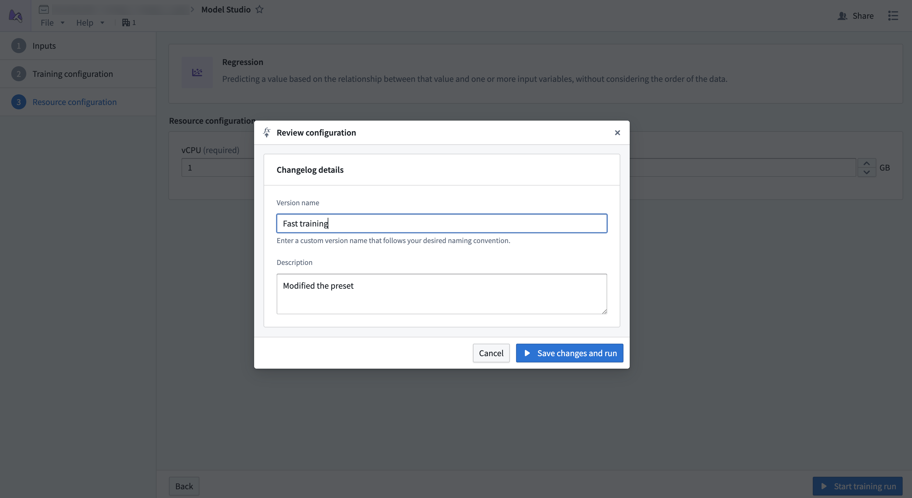

This page provides an overview of Model Studio's interface, navigation, and available controls.
To create a model studio, choose a trainer and select a name and location for the output model.

Selecting Next will bring you to the configuration wizard.
After successfully creating a model studio and launching a training run, you will be directed to the Model Studio home page. This page contains information about your model studio and provides links to access output models and experiments.

The Start training run option at the top of the Recent training runs table will launch a build with the latest configuration when selected. The Edit configuration option next to it opens the configuration wizard, and the Explore data lineage button in the top navigation bar allows viewing the data lineage for your model studio. Open the data lineage to set up a build schedule.
Below the top navigation bar is a card that contains details about the output model, such as its name, path, and status. The icon to the right of the model name may appear yellow, indicating that source data has updated and the model is considered out of date.
The main section of the home page shows a list of training runs that were executed for the model studio.

The table columns are as follows:
Select a row in the table to reveal more details about that row in the sidebar.
The sidebar displays information about a selected run from the Recent training runs table. The top of the sidebar shows the name of the configuration that was executed, followed by the date of the training run. Below these, select the model name to open the produced model version, or select View experiment to open the run's experiment.

The following information about the training run's configuration is also available:
The configuration wizard is used when creating or editing a model studio configuration, and will guide you through the model studio configuration steps. Each trainer has its own defined configuration options.

When all steps in the wizard have been completed, you will be asked to provide a name and an optional changelog for the configuration version. These will provide descriptive details about what the configuration does and what changed from the previous version.
